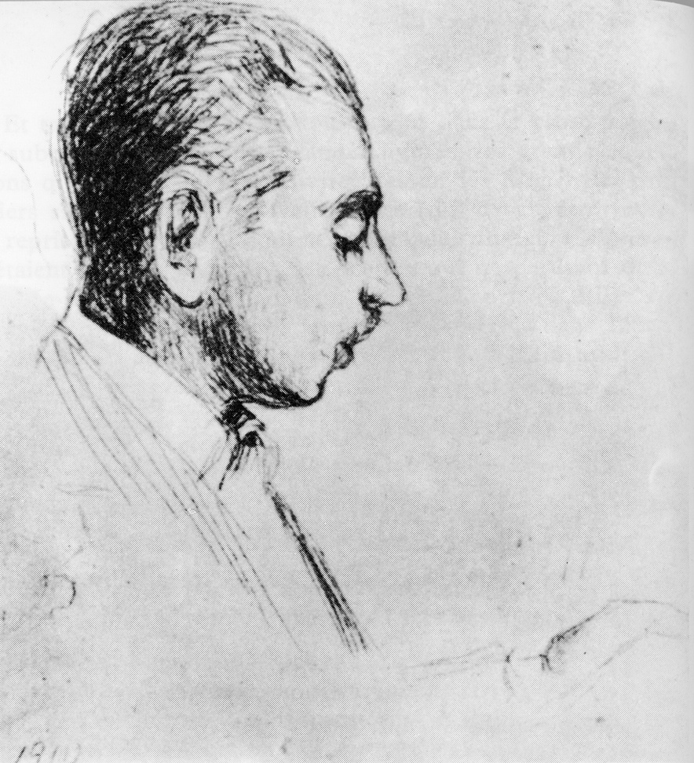

Księżna Taxis i Dottor Serafico
W poniedziałek 13 grudnia 1909 roku Rilke poznaje osobiście księżnę Marie von Thurn und Taxis. Na spotkaniu przy herbacie w paryskim Hotel Liverpool obecna jest także francuska poetka, hrabina Anna de Noailles. Przyjmując zaproszenie księżnej, Rilke nie przypuszczał, jak niezwykle doniosły stanie się ów dzień, w którym postać księżnej Taxis pojawiła się w jego życiu.
Portret Rilkego autorstwa Marie Taxis, rok 1910
Oto fragment zapisków księżnej, które po śmierci poety zebrała i opublikowała pod tytułem Wspomnienie o Rainerze Marii Rilkem.
Na kartach moich dzienników odnajduję notatki, skreślone po niemiecku, przeważnie jednak po francusku, nierzadko jeszcze tego samego dnia. Przepisuję je w brzmieniu nieomal dosłownym, poczynając od wspomnienia naszego pierwszego spotkania w Paryżu w grudniu roku 1909.
Owszem, znałam już wówczas większość jego publikacji, dużo też o nim usłyszałam z ust naszego wspólnego przyjaciela, dr. Rudolfa Kassnera. Pewnego wieczoru w Wiedniu Kainz deklamował jego wiersze, które uczyniły na mnie przejmujące wrażenie. Wiedziałam, że Rilke przebywa w Paryżu, słyszałam także o uwielbieniu, jakim darzył comtesse de Noailles, którą pewnego razu spotkał był przelotnie w atelier Rodina.
Oto kilka zdań, jakie zanotowałam wkrótce po naszym pierwszym spotkaniu.
Bawiłam w Paryżu około dwu tygodni, podczas których wybrałam się z wizytą do comtessy de Noailles. — Proszę mi wyjawić — rzekła niespodzianie — kimże jest ten Rainer Maria Rilke? — Rainer Maria Rilke — odparłam — ależ to przecież jeden z najznamienitszych poetów Niemiec! — W istocie — odpowiedziała z żywym zainteresowaniem — to zaiste poeta, proszę sobie wyobrazić, otrzymuję od niego zgoła niezwykłe listy. (Wybuchnęłam śmiechem, który udzielił się również hrabinie). — Z przyjemnością poznałabym go osobiście. Pani go zna, czyż nie? Czy mogłaby Pani zaaranżować spotkanie? — Znam go co prawda, niemniej jak dotąd nie zostaliśmy sobie przedstawieni. Lecz nie widzę przeszkód. Proszę przyjść do mnie na herbatę, a pozna Pani swego poetę. — I tak skreśliłam mój pierwszy list do Rainera Marii Rilkego; wkrótce potem otrzymałam od niego nader uprzejmą odpowiedź, iż przyjmuje moje zaproszenie. Wspomniałam mu, iż owego dnia oczekuję także wizyty Mme de Noailles. W poniedziałek, 13 grudnia roku 1909 poeta zjawił się punktualnie. Byłam mile zaskoczona, zarazem jednak nieco zawiedziona, bowiem zupełnie inaczej go sobie wyobrażałam — nie spodziewałam się człowieka w tak młodym wieku, o dziecinnej nieomal powierzchowności. W pierwszej chwili wydał mi się niezbyt urodziwy, acz nad wyraz sympatyczny. Szalenie nieśmiały, lecz pełen towarzyskiej ogłady oraz rzadko spotykanej szlachetności. Niemal od razu zaczęliśmy rozmawiać jak dwoje starych, dobrych przyjaciół. Rilke ukończył właśnie pisać «Pamiętniki Malte Lauridsa Brigge». Mówił o nim — i to poruszyło mnie do głębi — jak o rzeczywistej postaci, nie zaś o wytworze literackiej fikcji. Malte wciąż wypełniał jego myśli: — Sądzę, że wyraziłem w nim wszystko, nie potrafię powiedzieć nic więcej, zupełnie nic… — powtarzał głosem tchnącym przygnębieniem. Jako że wówczas nie znałam jeszcze tego naznaczonego bólem dzieła, nie mogłam właściwie zrozumieć sensu jego słów.
Mme de Noailles — czego można się było spodziewać — kazała na siebie czekać. Kiedy wreszcie rozwarły się drzwi, w progu ukazała się «mała, porywcza bogini» (jak Rilke zwykł ją później nazywać). Były to czasy, kiedy kobiety nosiły olbrzymie kapelusze i długie, nader wąskie suknie. Ogromny, ciemny, uginający się od piór kapelusz hrabiny ledwie zmieścił się w drzwiach. W obcisłej, ściągniętej sznurowaniem sukni, spowijającej ją od stóp do samej głowy, comtesse wyglądała niczym egipska statuetka. Nasz poeta wszakże, jak sądzę, dostrzegł tylko jej oczy — ogromne, czarne, władcze. Hrabina podeszła krok bliżej, znów przystanęła i zawołała: — Monsieur Rilke, co Pan mniema o miłości, co Pan sądzi o śmierci?
Z trudem zdołałam zachować powagę; Rilke był zażenowany i oniemiały. Trwało to jednak tylko krótką chwilę — zaraz też zasiedliśmy zgodnie przy kominku. Mme de Noailles, zarzuciwszy swą pretensjonalność, jak zawsze wzbudzała podziw; wkrótce uświadomiła sobie — wyczułam to w jej głosie — jak niezwykłego człowieka miała oto sposobność spotkać. Z niezmiernym zainteresowaniem przysłuchiwałam się rozmowie dwojga poetów, którzy bez trudu zgłębiali najskrytsze tajniki rzeczy, rozumiejąc się przy tym nieomal bez słów. Nadto było dla mnie rzeczą wielce zajmującą obserwować Niemca i reprezentantkę kultury romańskiej. Sama będąc dzieckiem obydwu nacji, zauważyłam, iż w pewnej kwestii nie mogli znaleźć wspólnego języka. Oboje wybuchnęli śmiechem, kiedy zdołałam wyjaśnić ich nieporozumienie. W sposób wielce osobliwy Mme de Noailles żaliła się przed poetą, jakich ogromnych trudności może czasem nastręczać sama forma lirycznego wersu, jak wielkiego wysiłku wymaga nierzadko owo zmaganie. Rilke spojrzał wówczas na hrabinę swymi dużymi oczami, w których kryło się zdumienie. — Jakże to, nie sądzi Pan, iż to niekiedy okropnie żmudne? — pytała raz za razem. — Ależ skąd, bynajmniej… — Wydawało się, że poeta nie potrafi tego pojąć. Mniemam, iż Mme de Noailles nie potraktowała jego odpowiedzi z należytą powagą. Dopiero gdy bliżej poznałam Rilkego, zrozumiałam, jak wiele prawdy kryło się w tym zdaniu. Poeta bowiem nie napisał nigdy bodaj pojedynczej linijki wiersza, nie czując w sobie inspiracji i wewnętrznego przymusu. Owładnięty przez nie, oddawał się im bez reszty, nie uświadamiając sobie zazwyczaj, jakim sposobem niewielki notes, który zawsze miał przy sobie, zapełniał się zapiskami. Rilke pokazywał mi go wielekroć; za każdym razem ogarniało mnie zdumienie, kiedy spoglądałam na nieskalanie czyste, wyraźne pismo, bez śladu jakiejkolwiek korektury.
Ów notes nosił Rilke zawsze w kieszeni czarnej, satynowej kamizelki, zapiętej po samą szyję — była to zresztą jedyna osobliwość, na jaką sobie przez pewien czas pozwalał. Poza tym jego skromny ubiór, przy całej swej prostocie, nie budził zgoła żadnych zastrzeżeń.
Pożegnawszy Mme de Noailles, dotrzymywaliśmy sobie wzajem towarzystwa jeszcze przez długi czas. Rilke nie mógł otrząsnąć się z przemożnego wrażenia, jakiego był doświadczył. Wszelako spotkanie to miało dziwne implikacje. Poetą zawładnął bezgraniczny lęk przed wpływem, jaki mogłaby przypadkiem zyskać nad nim Mme de Noailles. Po tym pierwszym spotkaniu, które tak wiele mu ofiarowało, skreślił do młodej hrabiny list, w którym wyznał, iż nie poważyłby się zacieśnić łączących ich więzów. — Pani to zrozumie — rzekł do mnie — gdybym widywał ją częściej, wówczas zatraciłbym mą własną tożsamość, popadłbym w jej niewolę i mógłbym żyć już tylko jej życiem… — Z ust Mme de Noailles, na której obliczu malował się to gniew, to znów rozbawienie, usłyszałam te słowa: — Ach, Pani poeta jest nader uprzejmy — śle do mnie list jedynie po to, by mi oznajmić, że nie chce mnie już więcej widzieć. — Zapewniałam hrabinę, iż jest to być może dowód najwyższego uznania, jakie Rilke mógł jej okazać.
Wkrótce potem poeta ofiarował mi esej poświęcony tej «niebezpiecznej istocie»: «Księgi miłującej», utwór, który uważam za jedną z jego najbardziej niezwykłych prac.